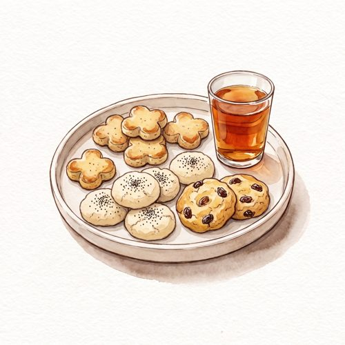
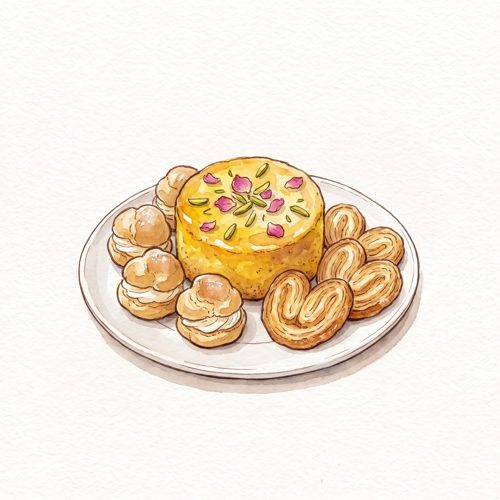
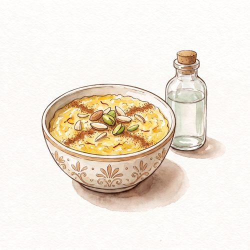
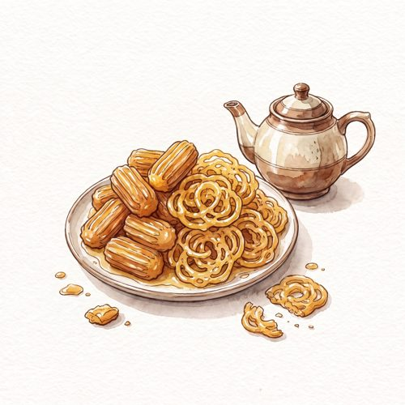
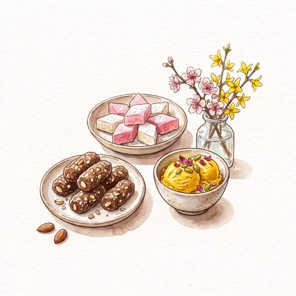

The Persian Sweets Sketchbook
40 Iranian Sweets, Weighed and Drawn

Saffron, rosewater and cardamom. Forty Persian sweets, weighed and drawn.
From clover-shaped chickpea cookies and rosewater rice cookies to saffron rice pudding, syrup-soaked bamieh and almond mulberries for the Nowruz table, this sketchbook-style collection gathers forty classic sweets of Iran: cookies, pastries, puddings, fried sweets and candies, and festive treats.
Every recipe is written in grams and comes with the numbers that matter at a glance, each beside a hand-drawn watercolor illustration, with its Persian name and the story behind it.
Inside: a Persian pantry guide to saffron, rosewater and cardamom, a guide to the Nowruz sweet table, and a troubleshooting page.
Inside the book

Shirini-ye Khoshk: Cookies

Pastries & Cakes

Puddings & Spoon Sweets

Fried Sweets & Candies
